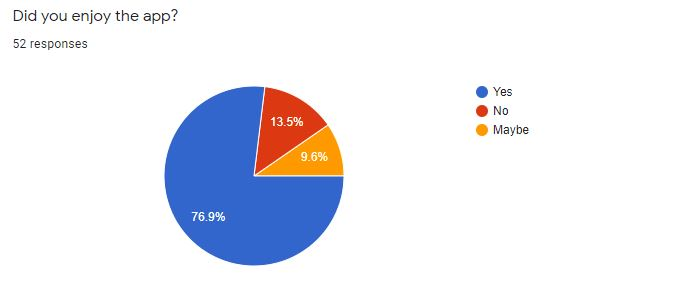

Survey Analysis
Question: What to do with your old phone when you get a new phone?

The vast majority of people who buy a new phone, don’t use or keep their old phones (78.2%). 19.4% of people would rather donate it, and an even smaller minority of people throw them away.
Question: How likely are you to recycle your technology (like old phones, monitors, laptops, computers, etc) at school?

This question is to monitor the likelihood of people donating their used technology to our cause. Although 33.8% of people rated their likelihood of donation at a 1, we hope that we will be able to change their mind when they see the good things that can come out of widespread donation.
Question: If our capstone group was to put Technology Recycling bins in Fairchild, where would you like to see them?

After polling this question, we determined that the majority of people would like to see our bins in the Main Office, Lunch Room, and each of the three school’s office.
Question: Do you (or would you) recycle?

The majority of people (54.6%) responded with “Yes” and another 39.4% of people responded with “Not currently, but I would”. With this in mind, we are certain that the level of involvement with technological recycling will increase because of our project.
Survey Analysis
Question: Do you enjoy the app?

Over three quarters of the responses said that they did enjoy the app!
Would you use our app to help donate tech?
Around 50% of the people who tested our app said that they would use it to donate tech. We are still trying to raise this number.
What would you rate the app on a scale of 1-10?
Almost a third of testers rated our app a 10 which was unexpected. We are still in prototype phase and will work to increase our rating amongst our users.
Was the overall design of the app satisfactory?
One thing many people said was that we could work on the design of the app but still 60% said that the overall design was satisfactory.